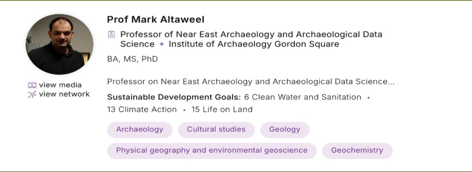
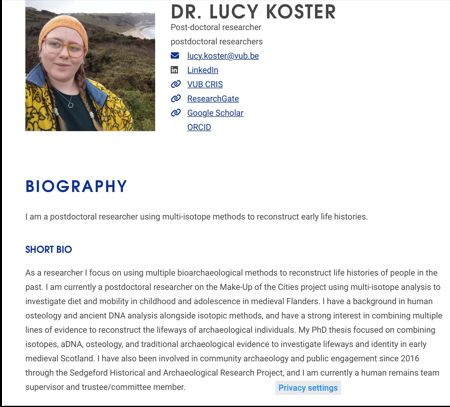

Innovation Project
ArcBot, the AI chatbot capable of predicting and gathering information all with the press of a button. ArcBot has faced various different modifications and changes which have improved its usability, capability and transferability, for one purpose, to change the archaeology industry and take efficiency to level 10.
This was the beginnning, the idea generation and selection. This phase invloved lots of critical thinking and narrowing down on specific ideas. We had many different ideas along the way, the most prominent ones being a lidar based drone scanner with a pH level indicator beneath it which identify and suppress existing dangers. Another idea was a toolkit and boots which archaeologists used to traverse dangerous terrains and excavate safely. Our final idea was the AI based predictor-bot which could take in questions about specific regions or civilisations and predict artifact locations easily.
The first prototype, the start of it all, ArcBot was created. Equipped wih one basic feature, select an option, get a different response every time. Although this model was AI based, it still lacked the ability to create answers for any question that was asked, we began to understand more about it when one of first experts, Mr Bhuvanesh Satyamoorthy, told us that an AI very commonly had a speech feature. This was a pivotal change for our AI as it would lead to one of the biggest advancements we made.
Speech, one of the features every chatbot has. Now, we had it. Completed using OpenAI's Text-to-Speech API and their Whisper API, we fully achieved speech automation in the AI tool. We could start speaking and have the text come out onto the terminal and when the answer came out, a audio file auto played and could be saved at any time. This was what we thought was the peak of the AI. But now, it was time for a greater change...
A completed Web User Interface, a staple of any major program, specifically AI ones. The idea came to us when our team were brainstorming ideas which could take the Chatbot to another level. Various ideas were thought about, but this was one which we knew would be the idea to change our program.
Good User Interface, Good Voice Recognition, Good knowledge. What more would you want a Chatbot to have? What about a handheld device, same capabilities, same level of detail, but in a smaller, more compact and easier to use device. This was where we really understood how this project would greatly influence the lives of working archaeologists.
Over the course of the previous couple of months, we have spoken to many experts regarding our Innovation project...
|  |
Professor Mark Altaweel was the first consultant that we spoke to, and he greatly shifted our perspective pf what our chatbot was doing. We thought that our Chatbot would be a research tool for archaeologists, but he explained that it was more of a predictor-bot. |
|
Dr Lucy J Koster is a profesoswidc jirwbufbwefbweofneofqwoff wfuoqwhfoqw fuebfegfuefw efuwefew fuiwefe fwyei fewf we fewif ewif ewfiwe fweyif iwefewfefjweobfew fuebewbwebgueguoewbfueobfewfouwebfuefuewvfwuobfouwefbewguwewvgowu4g |
 |